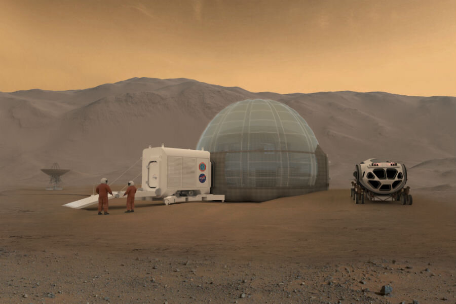

Moral Considerations
The act of colonizing Mars brings forth complex ethical questions regarding the rights to modify another planet's ecosystem. The ethical discourse, as framed by Puumala et al. (2023), considers the preservation of Martian environments and the potential consequences of human activities. There are significant debates around whether it is morally acceptable to alter a potentially pristine planet for human benefits.
Legal Framework
As human presence on Mars becomes a reality, the necessity for a robust legal framework becomes imperative. According to Plazovnik and Kohler (2024), there is a pressing need for international treaties and laws that regulate sovereignty, resource utilization, and environmental protection on Mars. These frameworks are essential to ensure that colonization efforts are conducted responsibly and ethically, safeguarding both terrestrial and Martian interests.